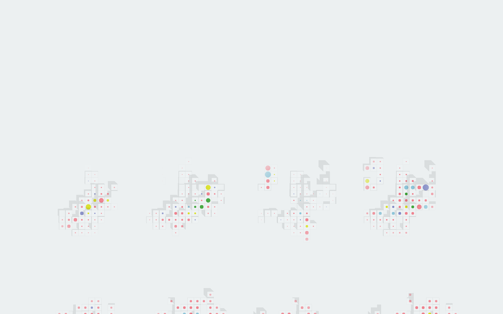
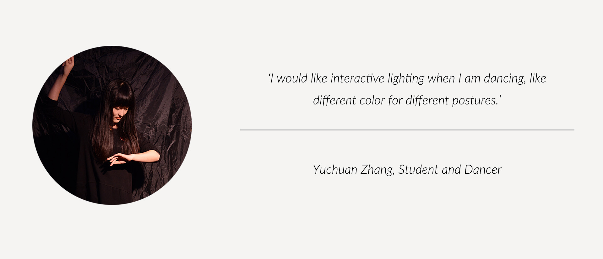

Interactive Lighting Installation & Concept Design
Interaction Design
Installation Making
Interaction Designer
Researcher
Yuchuan ZHANG, Junlin LUO
Shu ZHOU, Hao SHI
As more and more activities take place at night, lighting is becoming increasingly important in college students' life. However, the object and activities to be illuminated are never static. And lighting solutions should change according to different objects. In this project, we seek to create a new interactive ground which responds to various evening events and changes accordingly to objects types and their motions.
There are many types of activities: concert, ball, cocktail party, and small meetings. In order to know what kind of color is better for lighting, we experimented on effects of lighting on objects, people, food, and plats. As result, factors like color, illuminance, direction all play important roles in the final visual results.
We then made installations to test on the mixing of lighting effects according to the research above. Through the control of circuits, we made the installation interactive to different scenarios.
We made installations with simple board and reflective paper. The triangle shape and reflections made the lighting effect overlapping with each other.
We tested on different colors and color combinations based on the research conducted. We only have three colors of LEDs, but we can create far more beyond that by combinations and overlappings.
We found that the colorful ground can be used in many accasions. Therefore, we went on to explore the concept of interactivity between motions and lighting.
In the transformation between scenarios, lighting acts as a media to perform different topography on the same ground. Upon responding to the activities, different lighting shapes people as well as landscape. We tried to redefine the original surface into a new "interactive pixel" surface. Different circulation flows and activities influence the lighting scenarios on the interactive pixel, thus creating various media topography on the same surface.
Moving from traditional boxes, we generated interactive pixel, which holds both fluid surface and flat ground.
The interactive pixel can response to both individual and collective activities differently, thus creating

Individuals movements together form the interactivity of the whole surfae. Specially, collective points serve as the main driving factors.
I did two renderings to simulate the activities happening in the surface.